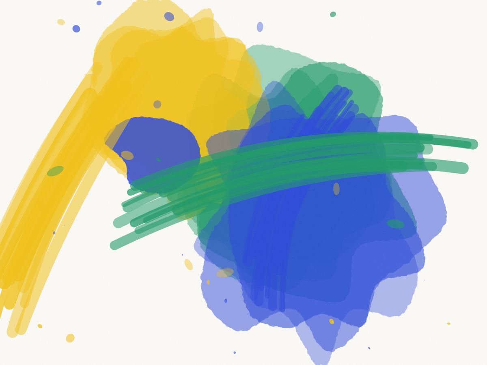
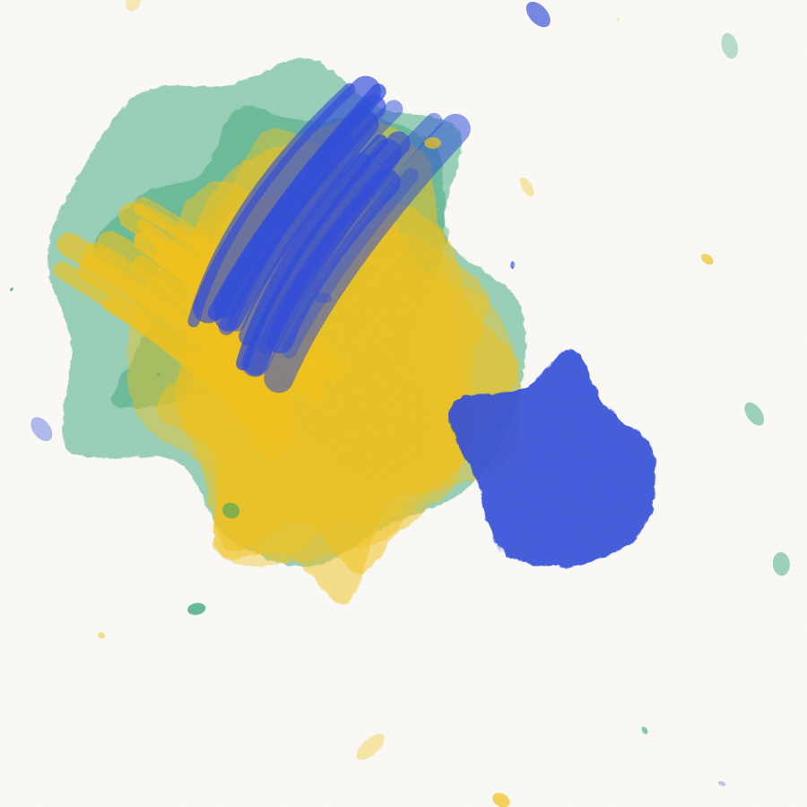
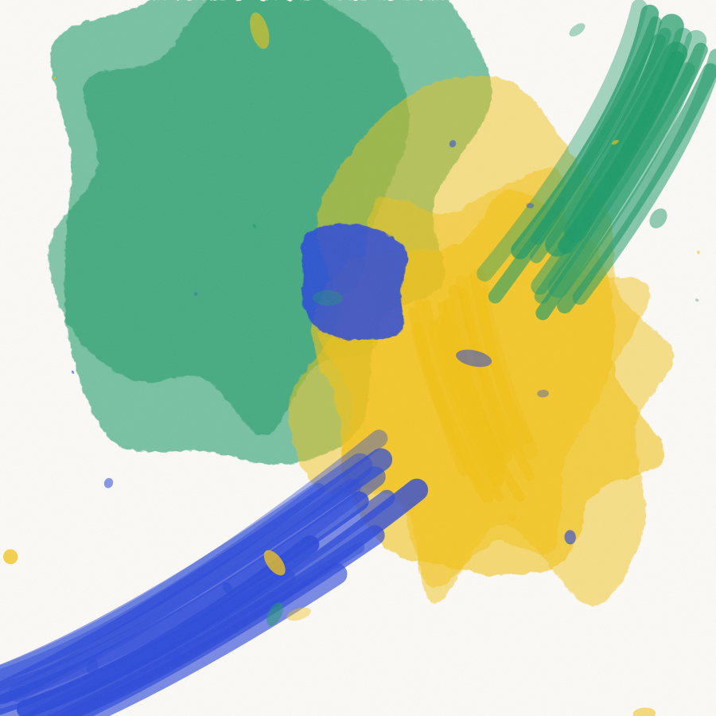
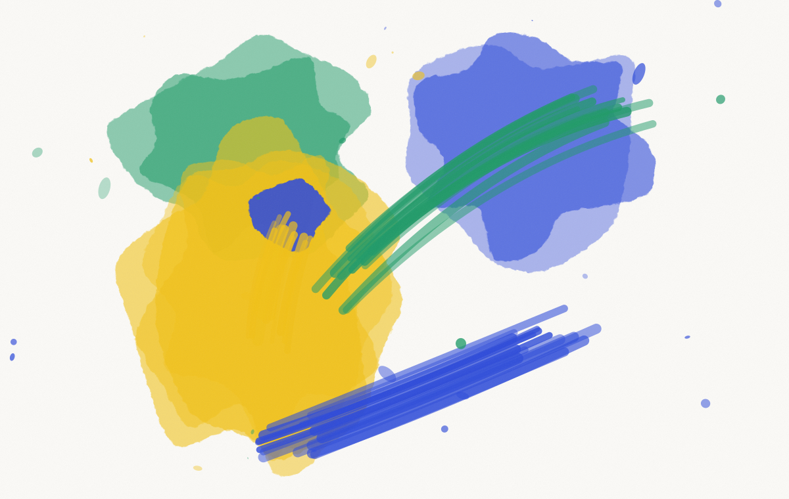
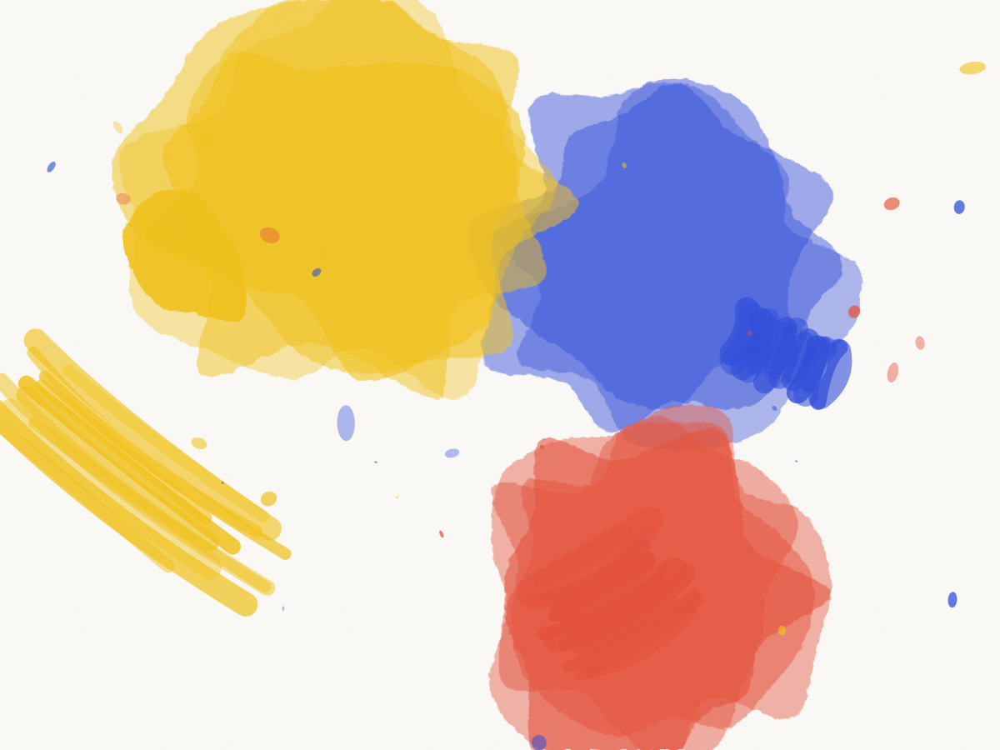

Projet 02 · Identité et packaging · 2026
Un budget d’impression qui interdisait la solution évidente, et une contrainte qui a fini par faire la marque.

Client
Méridienne, maison de thé, Paris 11e
Année
2026
Durée
Neuf semaines
Périmètre
Identité, packaging, étiquetage, signalétique
Équipe
Théo Vanier, Jonas Bredal
Fabrication
Cartonnages Lemoine, Pantin
Quarante thés, une seule boîte
Méridienne ouvre rue Saint-Maur en mars 2026. Quarante thés en vrac, dont dix-sept références qui changent chaque saison. Deux fondateurs, un local de 32 m², et un budget d’impression qui ne supportait pas quarante boîtes différentes.
La contrainte économique est devenue le projet. Une seule boîte, imprimée en grande série, neutre, chaude, reconnaissable. Et une étiquette apposée en boutique, imprimée à la demande sur une petite machine thermique qu’on leur a fait acheter 340 euros.


La boîte ne change pas. L’étiquette porte le numéro et la saison.
Le numéro plutôt que le nom
Les noms de thés sont imprononçables pour la moitié des clients, et les fondateurs passaient leur temps à les répéter. On a numéroté de 1 à 40. Le nom complet reste sur l’étiquette, en petit, avec l’origine et l’année de récolte.
Trois semaines après l’ouverture, les habitués commandaient par numéro. C’était l’objectif, mais on ne pensait pas que ce serait si rapide.

Les aplats retenus pour la gamme, avant le bon à tirer.
Ce qu’on a livré
Identité
Logotype, caractère, palette, et le système de numérotation qui structure toute la boutique.
Packaging
Une boîte en deux formats, 100 g et 250 g. Trois mille exemplaires imprimés chez Cartonnages Lemoine, à Pantin.
Étiquettes
Un gabarit paramétrable que les fondateurs remplissent eux-mêmes. Pas de retour au studio pour chaque nouvelle récolte.
Boutique
Signalétique murale, ardoise des saisonniers, sachets de dégustation, carte de fidélité tamponnée à la main.
Ce que ça a changé
Le coût d’emballage par référence est passé de 1,90 euro à 0,42 euro. C’est le chiffre dont les fondateurs parlent en premier quand on leur demande.
Pour nous le vrai résultat est ailleurs. Ils ont ajouté onze références depuis l’ouverture sans nous rappeler une seule fois. Une identité réussie, c’est une identité dont le client se sert sans vous.
On leur avait demandé quarante boîtes. Ils en ont fait une, et c’était la bonne réponse.
Paul Vasseur, cofondateur de Méridienne

Projet suivant
Voir le projet →